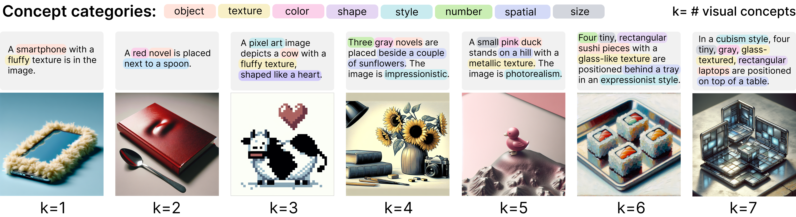

Compositionality is a critical capability in Text-to-Image (T2I) models, as it reflects their ability to understand and combine multiple concepts from text descriptions. Existing evaluations of compositional capability rely heavily on human-designed text prompts or fixed templates, limiting their diversity and complexity, and so the evaluations have low discriminative power. We propose ConceptMix, a scalable, controllable, and customizable benchmark consisting of two stages: (a) With categories of visual concepts (e.g., objects, colors, shapes, spatial relationships), it randomly samples an object and k-tuples of visual concepts to generate text prompts with GPT-4o for image generation. (b) To automatically evaluate generation quality, ConceptMix uses an LLM to generate one question per visual concept, allowing automatic grading of whether each specified concept.

Overview of CONCEPTMIX benchmark for T2I models.
We provide a Leaderboard table to showcase the performance of different T2I models evaluated with the ConceptMix benchmark.